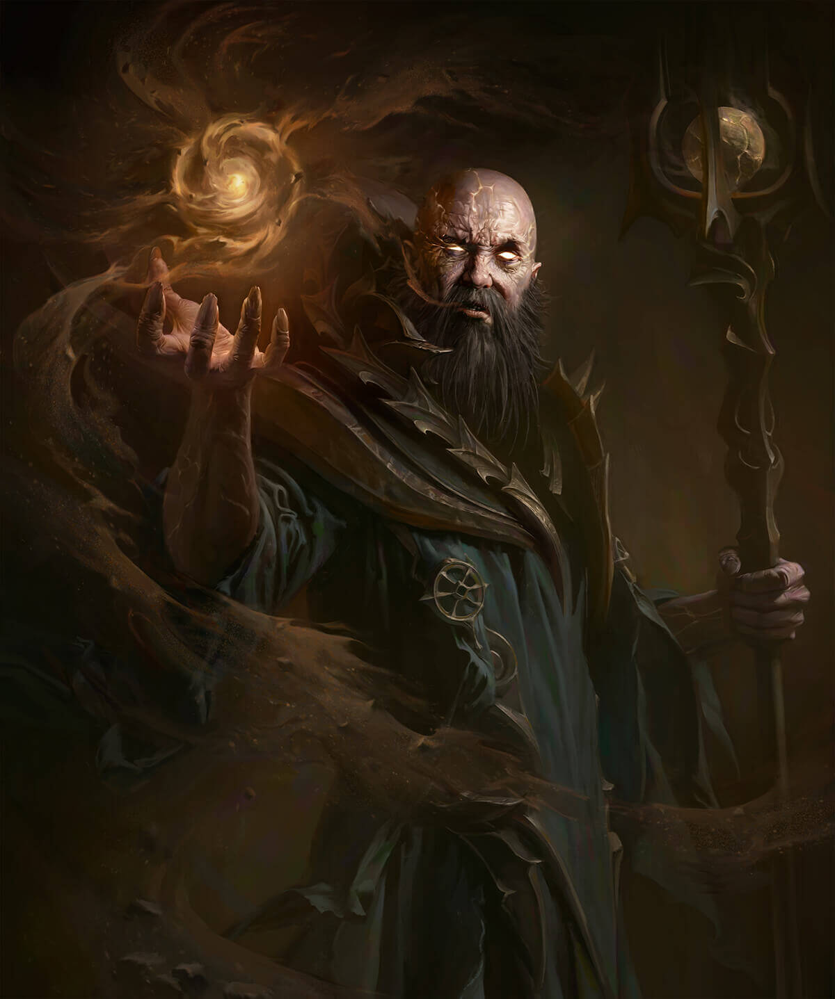

Enemigos
Diablo HellFire
Lazarus
El Arzobispo Lazarus fué un embajador de la Iglesia Zakarum y asesor del Rey Leoric que fué corrompido por Diablo. Según el manual de Diablo II - en una carta del Patriarca de Zakarum - Lazarus era el Guardián de la piedra del alma de Mephisto en Kurast antes de su llegada a Khanduras. Cuando Leoric estableció la corte en el monasterio, Lázarus fue atraído a las profundidades del monasterio por Diablo, donde rompió la piedra del alma que aprisionaba el mal. Después de que Diablo no pudiera poseer a Leoric, Lázarus trajo al hijo del rey, Albrecht, al interior del laberinto, para servir al Señor del Terror. Tras la muerte de Leoric, Lázarus salió de las profundidades del Monasterio para reunir a los aldeanos en busca de Albrecht, pero en realidad los conducía directamente a la guarida de El Carnicero. Después de esta incursión desastrosa, Lázarus desapareció en las profundidades del monasterio, donde permaneció, custodiado por esbirros demoníacos. Finalmente es derrotado por el héroe durante el juego.
Rey Leoric
Más tarde conocido como el Rey Negro y, finalmente, como el Rey Esqueleto, era el gobernante de Khanduras justo antes de los sucesos de Diablo I. Él era un seguidor devoto de la religión Zakarum de la Luz, y era un gran señor antes de declararse a sí mismo rey. A pesar de que era un rey extranjero, la gente de Khanduras llegó a respetarlo por su evidente pureza de corazón y de obra. Él estableció su corte en el monasterio Horadrim, sin conocimiento de que la piedra de alma de Diablo estaba guardada allí en secreto. A todo esto, el poder de Diablo surgió al mismo tiempo, y el Señor del Terror finalmente corrompió a Lazarus, el arzobispo del rey. Lazarus, llamado por la influencia del Señor del Terror, fue hacia las catacumbas del monasterio, donde se encontró con la piedra de alma, y fue manipulado para destruirla, y así romper el hechizo que encerraba al mal. Una vez liberado, Diablo buscó el alma mortal más poderosa que pudiese poseer.
Diablo
Entre las diferentes misiones tendrá que derrotar al Rey Esqueleto antes de que éste levante un ejército de no muertos, derrotar al demonio carnicero invocado por Diablo y destruir al arzobispo Lazarus. Finalmente el héroe se enfrentará al propio Diablo, que se encuentra tomando posesión del cuerpo del príncipe Albrecht. Aunque durante la batalla Diablo muestra una apariencia demoniaca tras ser derrotado su cuerpo se convierte en cenizas, entre las cuales podemos ver el cuerpo de Albrecht con la Piedra del Alma de Diablo incrustada en la frente. Sabiendo que la Piedra ha sido corrompida por Diablo y que por lo tanto ya no posee el poder suficiente como para retener el espíritu del demonio el héroe decide sacrificarse clavándose la Piedra en la frente para intentar contener a Diablo con su propio cuerpo. Varios días de fiesta tuvieron lugar en Tristán tras la victoria sobre Diablo, sin embargo, durante esos días el héroe se mostraba más y más distante y encerrado en sus pensamientos. La esencia de Diablo iba cobrando fuerza dentro de él, convenciéndole de que debía dirigirse al Este para encontrar la redención.

Diablo II: Lord Of Destruction
Andariel
Andariel es una de los cuatro males menores, y la única mujer de los siete poderosos del infierno. Ella es una Succubus del submundo que ha sido enviada por Diablo para invadir la Ciudadela de la Hermandad del Ojo Ciego, con el fin de cerrar el paso a través de las montañas en la región oriental de tierras de Aranoch, de modo que nadie sería capaz de seguir Diablo en su disfraz del Errante Oscuro y le impida la liberación de su hermano Baal desde la Tumba de Tal Rasha. Se dice que andariel fue rechazada del infierno y expulsada. Durante el asalto al Monasterio de las Arpías, muchas hermanas fueron asesinadas y otras fueron corrompidas y se convirtieron al servicio de la Reina Succubo,como Cuervo Sangriento. Los sobrevivientes huyeron y el monasterio se convirtió en refugio de todo demonio invocado por andariel, por todo el desierto, aun en estas condiciones se logró establecer el Campamento de la Arpías. Ella es conocida en el infierno como la Doncella de la Angustia, y es la hija de Lilith y la nieta de Mefisto Señor Del Odio.

Duriel
"Duriel es el gemelo de Andariel. Creo que conspiraron juntos para ayudar a Diablo a liberar a Mephisto y Baal, aunque ambos habían apoyado a los males menores en el pasado. El Señor del Dolor fue encontrado custodiando la prisión de Baal, la tumba de Tal Rasha cuando fue asesinado por los héroes".

Mephistos
Mephisto, el Señor del Odio, es el más antiguo de los tres demonios mayores, se especula, a menudo, con la posibilidad de que sea su líder. Parece ser el más inteligente, estratégico y analítico de los tres (siendo esto paradójico, pues en el juego es el más débil). También es conocido por ser el primer demonio en tener hijos, es padre de Lucion y Lilith. Mephisto, uno de los tres hermanos mayores junto a Baal y Diablo, también conocido como el Señor del Odio, había sido encerrado en Kurast por la hermandad de los Horadrim, que tras conseguir encerrarlo en una de las piedras del alma, esta fue llevada a Kurast, en concreto fue encerrado bajo la Torre Guardian en la ciudad Templo de Travincal, su entrada fue sellada bajo el orbe impositor y había quedado custodiado por el Consejo Superior de Zakarum. Pero poco a poco Mefisto consiguió corromper a todo el consejo Zakarum excepto a uno, Khalim. A éste lo despedazaron siguiendo las órdenes de Mefisto y lo repartieron por todo Kurast con la esperanza de que nunca puediese revelar la forma de llegar a Mefisto. Desde allí abajo gobernaba sobre el consejo Zakarum y estos acataban todas sus órdenes.

Diablo
Diablo, el señor del terror, es un demonio primario y enemigo final tanto de Diablo como de Diablo II y Diablo III. Sus hermanos son Baal y Mephisto. En Diablo III se supone que es mucho más poderoso que en su estado original, ya que, en su ser encierra el poder de los 7 demonios, cuales estaban encerrados en la Piedra Esencial Negra. Su aspecto también es el resultado de la mezcla de los males, y tomando el cuerpo de Leah para lograr su transformación.

Baal
Después de que Mefisto fuera capturado en Kehjistan, Baal huyó, pero fue seguido rápidamente hasta Aranoch y se escondió en Lut Gholein. Los cazadores Horadrim esperaron hasta que salió de la ciudad en la que estaba y lo arrinconaron en el desierto. Baal fue derrotado, pero cuando iba a ser encerrado en su Piedra del Alma, su naturaleza destructiva rompió la piedra. Incapaz de contener el Primer Mal, Tal Rasha, el líder de la orden de los Horadrim, tomó la tarea de capturar de Baal, y se ofreció para completar la prisión con su propio cuerpo. Él teorizó que una persona de voluntad fuerte sería capaz de contener el mal del demonio. Para evitar que liberasen a Baal, el Horadrim Tal Rasha fue encadenado en una de las siete tumbas idénticas ocultas en el desierto.

Diablo III Reaper of Souls
El Carnicero
El demonio Carnicero es revivido y utilizado por la bruja Maghda para detener a los heroes de Santuario. El Carnicero es un enorme demonio, el de mayor tamaño del Acto 1 y aunque no sea ni un demonio mayor ni menor, es una amenaza considerable. El Carnicero ataca con toda su fuerza bruta, blandiendo en una mano, un hacha adornada con una calavera y en la otra, una hoz extensible. Su lugar de batalla es una cámara, en donde del suelo surgen llamas de fuego abrasador que suponen una mayor amenaza y obligan al jugador a mantenerse en movimiento. El suelo se compone de varios bloques que se activan aleatoriamente prendiéndose a los pies del jugador. A los lados de la sala se encuentran 2 pozos curativos.
Belial
Belial, el Señor de la Mentira, es uno de los demonios menores, que forma parte de los Señores del Infierno. Junto con Azmodan consiguen exiliar a los tres demonios mayores a Santuario, tras lo cual estalló una guerra civil entre los dos demonios menores por el control de los Ardientes Infiernos. Belial rápidamente perdió la guerra después de tan sólo dos décadas, y se desconoce si se sometió a Azmodan después de eso. Este demonio es el jefe final del Acto 2 en Diablo 3 y forma parte de la búsqueda: "Señor de la Mentira", objetivo 3: "Mata a Belial".

Azmodan
Azmodan, el señor del pecado y comandante de los Infiernos Abrasadores es una criatura enorme dotada de varias piernas. Es un demonio menor, uno de los siete grandes demonios que gobiernan los infiernos. Domina el Seno del Pecado, del Cráter Arreat. A pesar de su tamaño y su fuerza, prefiere lanzar hechizos que recurrir a la fuerza física, pero eso no significa que no sepa defenderse a corto alcance. Quienes se acerquen a él, sentirán la fuerza de sus musculosos brazos, que ejecutan ataques cuerpo a cuerpo estándar. Estos no solo infligen daño, sino que también relentizan al héroe. Quienes cometan la imprudencia de acercarse directamente a Azmodan serán repelidos por su poderoso ataque con el vientre.

Diablo
Han pasado dos décadas desde la última vez que los señores infernales Diablo, Mefisto y Baal deambularon por el mundo de Santuario, cuando Deckard Caín regresa a las ruinas de la catedral de Tristán buscando signos para derrotar el despertar del mal, un furioso heraldo del Apocalipsis cae de los cielos estrellándose en el mismo lugar por el que Diablo había penetrado en el mundo. Este fuego de los cielos reaviva antiguas perversidades y anuncia a todos los héroes de Santuario que ha llegado la hora de defender otra vez el mundo que pertenece a los mortales frente a los poderes que emanan de los Infiernos Abrasadores. Deckard Cain, que ha aparecido en los dos juegos anteriores es ahora acompañado por su hijastra, Leah, un nuevo personaje que acompaña al héroe en misiones de vez en cuando. La trama girará alrededor de los dos demomios sobrevivientes, Azmodan, Belial y un artefacto conocido como la Piedra del Alma Oscura. El Mapa del mundo de Diablo está compuesto principalmente de dos continentes principales con varias pequeñas islas en la región noroeste. El mundo de Santuario ha cambiado dramáticamente por los acontecimientos de Diablo 2; Lord of Destruction, debido la destrucción de la piedra del mundo

Malthael
Angel caído que encontró una extraña piedra en unos manuscritos y decidió conseguirla despues de obtenerla consigió unirse a ella obteniendo el alma de un ser llamado Diablo....desde ese momento se hizo llamar Malthael el angel de la muerte y no parará su sangría hasta morir o acabar con todo existencia, al necesitar una mente humana para no sef apoderado por el poder de diablo absorvió a un gran asesinó que se hablaba de él en su época, al encontrarse con él su poder era inmenso pero al verse derrotado le dijo que lo único que haría es vivir con sus pensimientos en Malthael y el asesinó decidió otorgarle sus sentimientos y recuerdos y así el asesino vivir en el cuerpo de Malthael pero los poderes no fueron transferidos ninguno.

Diablo Immortal
Blackrose
"Así que esta es la fuente de la corrupción del Bosque Oscuro. Vamos, monstruosidad. Encuentra tu final".
Una criatura oscrura y terrible, la Rosa Sangrienta estaba ubicado cerca de las Ruinas Sangrientas, y era la fuente de corrupción que se había apoderado del bosque. Recogió la sangre que se derramó en el bosque y se la dio de comer a la Condesa. Mientras continuara alimentando su sangre, la condesa no podría morir y la corrupción nunca terminaría. La Rosa de Sangre residía en su propio charco de sangre.
Los Gusanos Sangrientos, después de haber tendido una emboscada a un grupo de Rogues en las Ruinas Sanguine, llevaron a sus cautivos a la Rosa para que pudieran ser drenados de su sangre. Sin embargo, los Gusanos Sangrientos fueron asesinados por un héroe / grupo de héroes, y Blood Rose aparentemente murió. Sin embargo, Lakrii se ofreció a sí misma a la criatura y, después de drenarle la sangre, revivió, lo que obligó a los héroes a luchar contra ella una vez más. Sin embargo, fue nuevamente asesinado, esta vez de forma permanente.
Hydra
Según la leyenda, la Hidra original fue derrotada hace siglos por Bul-Kathos. Se decía que la gran serpiente engendraba dos cabezas por cada cabeza cortada. Para derrotarlo, el poderoso nephalem supuestamente arrojó a la bestia a una hoguera rugiente, arrancando uno de sus colmillos en el proceso. Se formó una varita a partir de él.

The Curator
Un simulacro de Zoltun Kulle, el curador fue creado en algún momento antes de la muerte del mago, en lo que aparentemente fue un momento en el que la egolatría de Kulle se apoderó de él. El curador fue creado a través de arena viva, como varias otras creaciones de Kulle (por ejemplo, golems). El duplicado fue asignado para actuar como curador de la biblioteca de Zoltun Kulle y garantizar su continuidad, pero al igual que las otras construcciones de Kulle, se mantuvo bajo control. Sin embargo, según el curador, "eso nunca antes me había detenido". Con el tiempo, la biblioteca cayó en mal estado. Su núcleo central se apagó y, como tal, se instalaron un par de protecciones que impedían el acceso a ciertas secciones de la biblioteca, incluidos los archivos secretos de Kulle. A pesar de los esfuerzos del curador, no pudo violarlos, para su frustración. Además, no pudo salir de la biblioteca.
Fallen War Matron
"El demonio conocido como Fallen War Matron ha sido convocado en el Templo de Namari. Es un oponente formidable al que enfrentarse solo, y aún más temible por su mando sobre una horda de subordinados caídos".

Lassal
En una visión del futuro otorgada por el Árbol Einfrinn, Lassal invadió Westmarch junto con Wrathborne. Dirigido por Izilech the Mishappen, prendió fuego a la ciudad y mató a cualquiera que se interpusiera en su camino. Al final de la visión, derrotó al héroe/grupo de héroes que tenían la visión. Después de su derrota, la mano de Lassal fue cortada y utilizada por Helliquary.